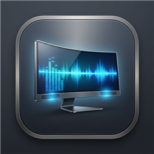

Monitron
LG UltraWide 49WQ95C
DDC/CI · Built-in speakers
Connecting…
Speaker volume
—
−5
−1
+1
+5
25
50
75
100
Mute
Refresh
Back
Settings
Appearance
System
Light
Dark
Startup
Launch at login
Start Monitron when you sign in
Start in tray
Don't show this window on startup
Controls
Fine volume step (%)
Small buttons, arrows, wheel; Shift shortcut
Large volume step (%)
Large buttons; Shift + arrows or wheel
Shortcut volume step (%)
Global volume shortcuts without Shift
Global volume shortcuts
Ctrl+Alt+↑/↓ ±2%, add Shift for ±1%
Sync with system volume
Follow system volume. Keyboard volume keys use the shortcut step when macOS has no output volume.
About

Monitron
v0.1.4
Hardware monitor control for LG and DDC/CI displays
Target Display
LG UltraWide 49WQ95C
Protocol
DDC/CI · VCP 0x62 / 0x8D
Backend
Windows (dxva2)
Runtime
Electron
Config Folder
Copy Info